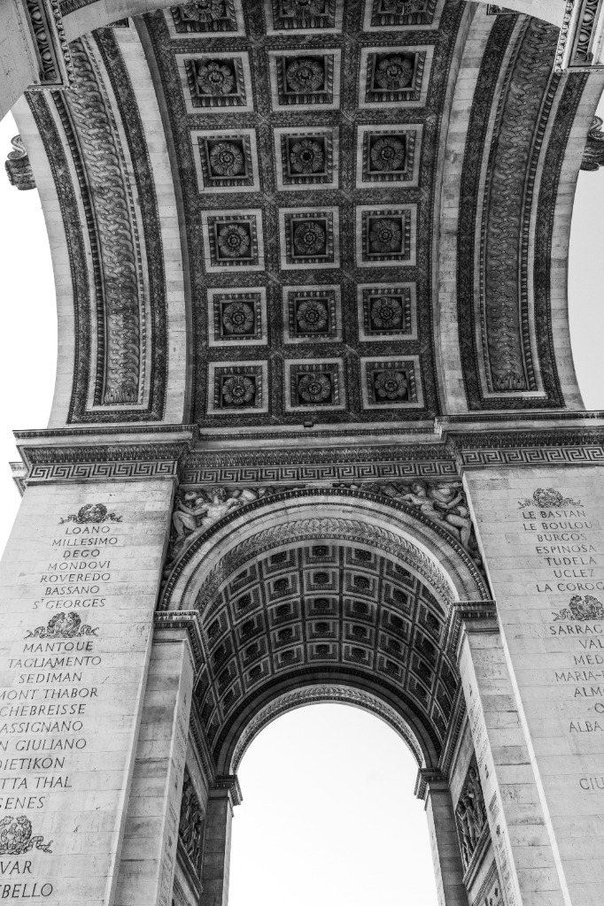

Zurück zum Portfolio
Fotografie
Architektur.
Strukturen, Linien und Kontraste – ein Blick auf die gebaute Umwelt durch meine Linse.
Urban Structures
Brutalism
Light & Shadow
Geometry
Urban Structures
Brutalism
Light & Shadow
Geometry
